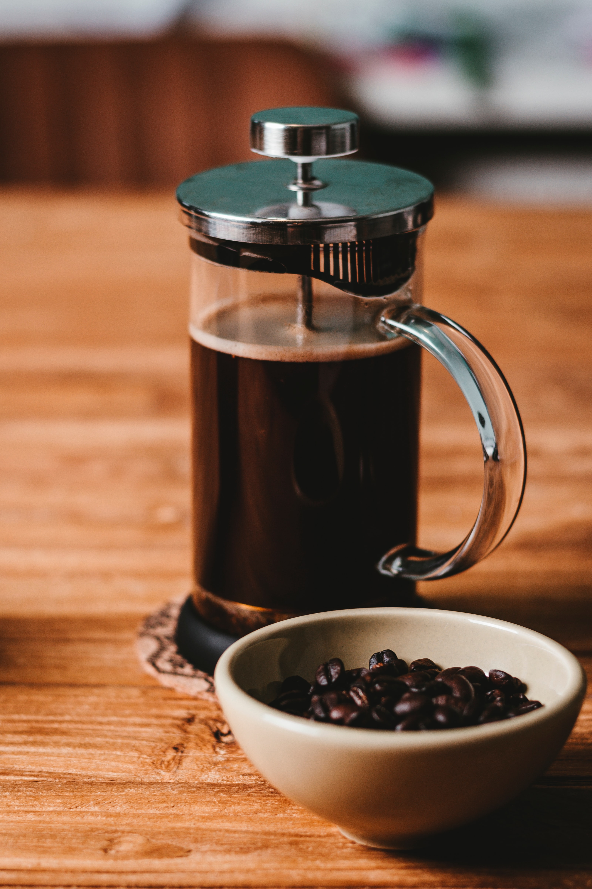

French Press
French Presses are great for people trying to make multiple, clean cups of coffee.

How to Brew
- Heat your water to 205 degrees. (Not boiling, since that will burn your grounds!)
- Measure out 55 grams of coffee beans.
- Grind your beans to a medium-coarse consistency using a burr grinder.
- Add your grounds to the press and pour enough water to saturate your grounds. (Pour in a spiral motion to evenly saturate your grounds.)
- After waiting 30 seconds, pour another 770 grams of water.
- Press the plunger down into the press so it touches the top of the water.
- After 4 minutes pour your coffee into a cup and enjoy. (You can go 3-5 minutes depending on how strong your want you coffee, but 4 is average.)